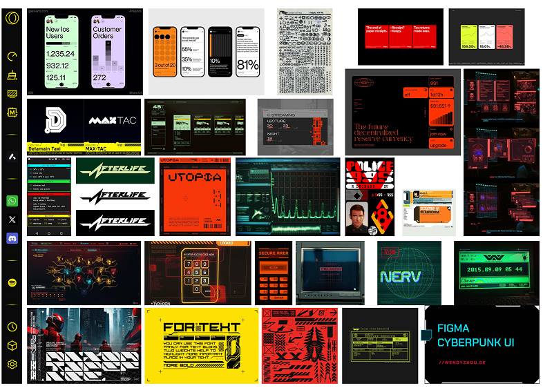
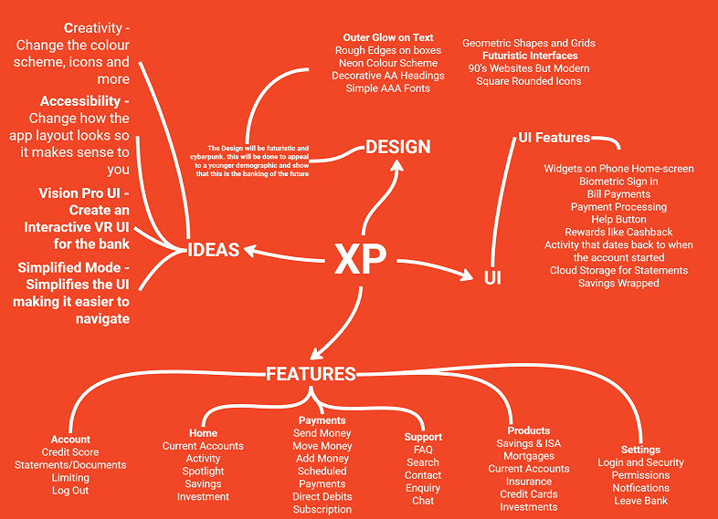
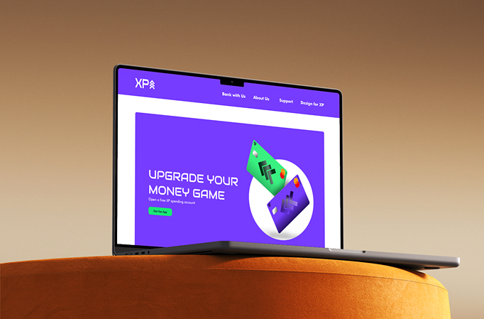
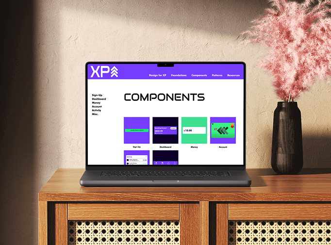
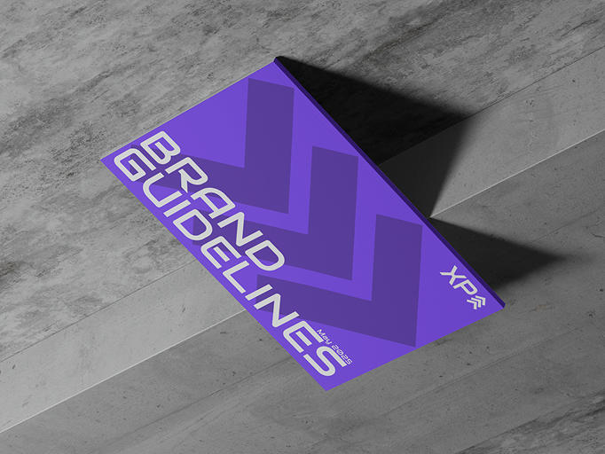
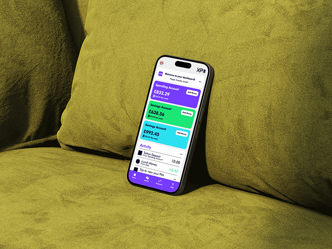
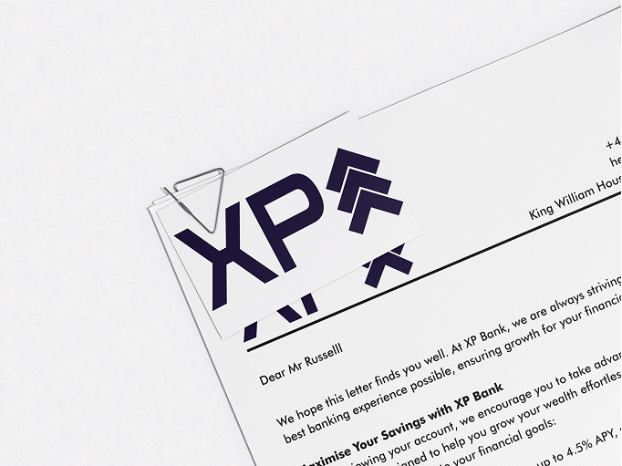

PROJECT SPECIFICATIONS
-
The time it took for this project was 9 – 12 Weeks.
-
Software used for this project: Figma, Blender, and After Effects.
-
This was a branding project that created an identity for a modern bank.
-
The target audience was 16–25 year olds.
THE BRIEF
Create a commercial bank brand for 16–25 year-olds. Options were to rebrand an existing bank or start fresh — I chose to build a new brand to fit the audience from the ground up.
RESEARCH
I reviewed brand guidelines and design systems from banks like Monzo, Santander and Wise to understand how they present identity and functionality. I also developed user personas and defined values for XP Bank:
- Human rights: fairness, inclusion, no discrimination
- Responsible banking: helping users save, invest and grow
- Round-the-clock support: reliable customer service
- Strong security: proactive scam prevention
- Innovation & feedback: the bank evolves through user input
IDEATION
Naming the brand was a big step. I tested ideas almost calling it bear bank. (yes, “Bear Bank” was one of them) but eventually chose “XP” for its simplicity and resonance with younger, gaming-aware users. The term XP suggests gaining experience — here it fits the idea of advancing your financial life through the bank.
Design-wise, I originally pitched a cyberpunk aesthetic (lots of energy, lots of risk). Feedback showed it was too niche and off-target, so I pivoted to a more brutalist style: clearer, stronger, more accessible.


DESIGNING
Drawing on the brutalist direction, I built the visual system: bold layouts, minimalist structure, strong typography and consistent brand elements. The identity covers word-mark, logomark, colours, typography, tone of voice, values and applications. I then applied that system across a full component library for scalability and consistency, eleven web-app screens covering core flows and interaction design, a four-page landing page focused on features, value proposition and a clear call to action, and motion graphics that bring brand energy while enhancing the experience.





TESTING AND FEEDBACK
User testing and peer review highlighted a few issues: the XP metaphor needed more explanation, the style could feel “too game-y” for banking, and some components didn’t scale cleanly across screens. I refined labels, simplified visuals, strengthened contrast for accessibility and reworked the component structure in Figma.

REFLECTION
Building XP Bank taught me how to align brand identity with real-life usability. I learned that clarity must come before flair, and that a design system is only useful if it’s built to scale and be shared. I tackled naming, visual identity, component design, prototyping and motion — all of it from scratch. The end result is a bank brand that feels credible, modern and aimed squarely at a younger audience. If I were to continue, I’d love to build a real-life build of the app and see the system in action with users. But for now, I’m proud of what I achieved and excited for the next project.